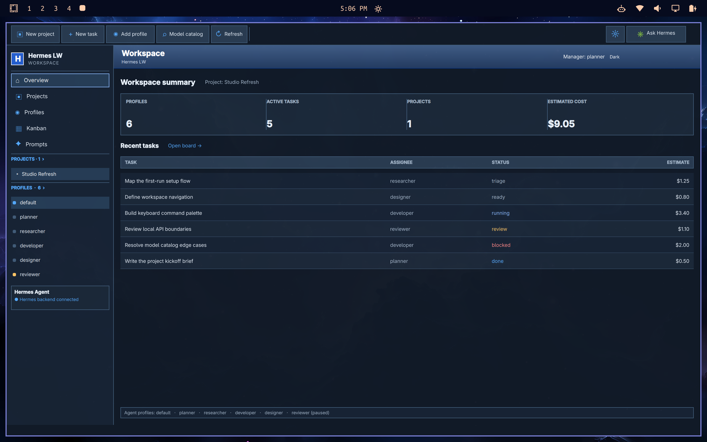
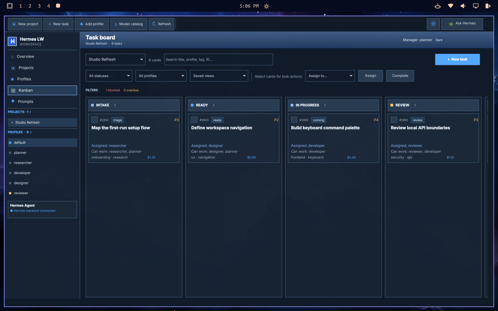
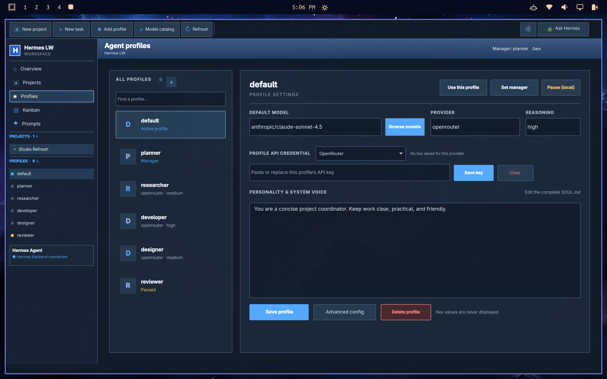
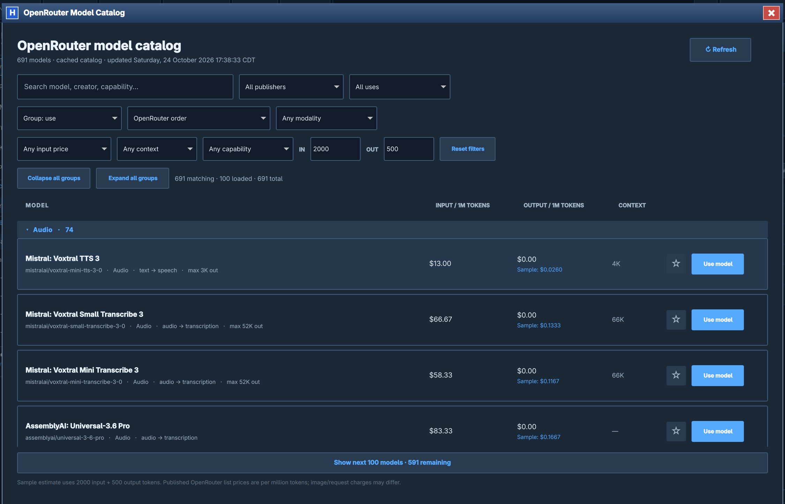
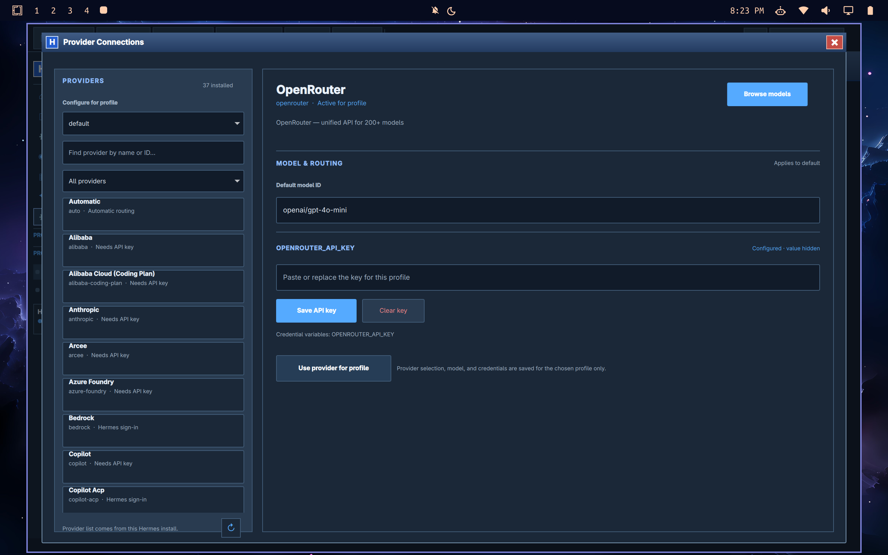
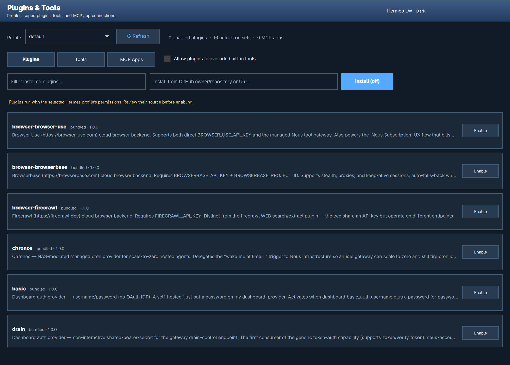
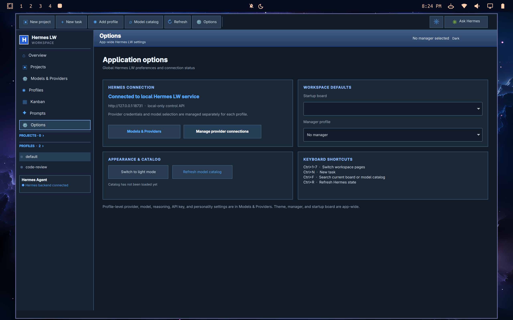

Profiles
Create, clone, edit, pause, resume, and delete profiles. Change model, provider, reasoning level, API credentials, and complete SOUL.md personality.
A Windows-inspired desktop control center for Hermes profiles, providers, models, projects, plugins and the Kanban task board. Built for local Linux desktops with Quickshell.
Hermes LW is a normal tiled desktop window. Hyprland controls its placement; smaller tiles use scrollbars rather than forcing a floating window over other apps.
The latest reliability audit documents verified fixes, automated checks, and remaining work on enforced spending and native task policy.
It gives you a visual control surface for multiple Hermes instances. The connection tabs can target Hermes on this computer, an SSH-connected VPS, or a token-protected HTTPS Hermes LW gateway. Quickshell renders the desktop interface and every profile, project, board, and prompt action is routed to the active instance.
Create, clone, edit, pause, resume, and delete profiles. Change model, provider, reasoning level, API credentials, and complete SOUL.md personality.
Browse the selected provider’s catalog, search by model and capability, group by publisher or modality, filter input/output cost independently, and favorite models.
Organize cards by project. Track owners, dates, estimates, effort, tags, dependencies, status, and per-card profile eligibility.
Manage Hermes plugins, platform toolsets, and MCP connections per profile. Use a local process or remote HTTP server.
127.0.0.1:18731. Provider keys are stored in profile-local files with owner-only permissions; keys are not displayed in the app.Click any image to open it at full resolution. The demo data shown in these captures uses fictional profiles and tasks.







Hermes LW is a source checkout, not an installer package. Run it in a session that already has Hermes Agent and Quickshell configured.
qs command)hermes)git clone https://github.com/thediamondsaint/hermes-lw.git cd hermes-lw ./launch.sh
The launcher checks that the local API matches this version, then opens a single Quickshell window. It follows normal Hyprland tiling and does not add floating or workspace rules.
~/.hermes.The status bar should say Ready. If it says disconnected, confirm the backend process is running and Hermes is available on your PATH.
Choose an existing profile from the sidebar, or create a new one. Profile-specific settings are edited in Profiles or Models & Providers.
Open Provider Connections from Options, select the profile and provider, enter its model ID and key if required, then save. OAuth-backed providers use Hermes’ own login flow.
Open the model catalog to check the selected backend’s available models. Create a project to get an isolated Hermes Kanban board, then add a task.
The connection strip at the top of the workspace represents Hermes installations. Profiles remain inside their instance: a profile named default on a VPS is separate from default on this computer. Switching tabs reloads that instance’s profiles, projects, model catalog, prompts, settings, and task boards.
Always available. Hermes LW runs its local control service on loopback and reads the Hermes CLI and data in the current Linux account.
Use an OpenSSH config alias or user@host. Hermes LW opens a loopback-only SSH tunnel and confirms that the remote Hermes LW API responds before marking the tab connected.
Connect to a TLS-protected Hermes LW gateway on a VPS or cloud host. The local service sends the saved bearer token server-to-server; the token is not returned to the UI.
ssh hermes-vps. A host alias in ~/.ssh/config is supported; you can also enter user@host and the SSH port.ExecStart path with the location where you cloned Hermes LW:
mkdir -p ~/.config/systemd/user
cat > ~/.config/systemd/user/hermes-lw.service <<'EOF'
[Unit]
Description=Hermes LW remote control API
After=network.target
[Service]
Type=simple
Environment=HERMES_LW_PORT=18731
ExecStart=/usr/bin/python3 /home/USER/Projects/hermes-control/backend.py
Restart=on-failure
RestartSec=3
[Install]
WantedBy=default.target
EOF
systemctl --user daemon-reload
systemctl --user enable --now hermes-lw.service
systemctl --user status hermes-lw.servicesudo loginctl enable-linger USER. Confirm the Hermes CLI is available to the user service’s PATH.The remote service stays bound to 127.0.0.1; do not open its port in the VPS firewall. Closing the tab ends the local tunnel and removes the saved connection, but does not stop or edit the remote Hermes service.
backend.py on the remote host, bound to loopback. Install a TLS reverse proxy such as Caddy or Nginx in front of it.openssl rand -hex 32. Store it in a file readable only by the service account, for example ~/.config/hermes-lw/gateway.env, as HERMES_LW_TOKEN=YOUR_RANDOM_VALUE; set permissions to chmod 600.EnvironmentFile=%h/.config/hermes-lw/gateway.env to the systemd service and restart it. The token makes the remote Hermes LW API require Authorization: Bearer ….http://127.0.0.1:18731, including the Authorization header. Do not expose port 18731 directly or run this endpoint over public plain HTTP.~/.local/share/hermes-control/connections.json with mode 0600; it is not encrypted with the system keychain.hermes serve endpoint or Nous-managed Hermes Cloud account does not expose this app’s profile, provider, plugin, and Kanban routes, and direct OAuth sign-in is not implemented here. This connection type is for a Hermes LW instance you host on a VPS or cloud machine.Connection names persist locally. Tabs show a connection type/status dot; click a tab to switch instances. The active tab remembers its selected project, profile, and page while this app is open. Requests from an old tab are ignored after switching, and a dropped SSH tunnel is re-established before retrying the data refresh.
Profiles are Hermes’ named agent configurations. The sidebar list shows active/paused state and lets you switch profiles without leaving the app.
Long profile and project forms stay within the available screen space and scroll inside their windows, so the save controls remain reachable on shorter displays.
SOUL.md for review and editing. Normal provider charges apply. The dialog keeps progress or provider errors visible, and it does not replace the preview on failure.New profiles default to cloning the default profile’s model and agent configuration, personality, and skills. Change the source or choose a full workspace-state clone when needed. API keys are omitted unless you explicitly opt in; a new key entered in the dialog is saved only to the new profile. Hermes LW never displays secret values.
Use the profile controls to pause/resume it for assignments from Hermes LW, set the manager profile, or delete a non-default profile. Pause prevents new assignments through this app; it does not stop an already-running Hermes process.
SOUL.md is its complete personality prompt. Save changes in the profile editor to write the personality into Hermes’ profile directory.Provider settings belong to a profile, so different profiles can use different backends and credentials.
Use the Options page and select Provider Connections. Choose the profile whose credentials you are changing.
The provider list comes from the Hermes version installed on the machine. Select the backend and enter its model ID or custom-compatible endpoint where needed.
Paste the provider key into the key field and save it. Hermes LW writes it to that profile’s private .env; the value does not come back to the UI. To change it, enter the replacement. To remove it, use Clear.
The catalog follows the selected provider. OpenRouter exposes published per-model input and output token prices; other Hermes providers may return model IDs without price metadata.
Enter multiple search terms to match model name, ID, publisher, description, modalities, and capabilities. Use the provider selector to load another provider’s model list.
Group by use, publisher, input cost, output cost, context, or modality. Filter input and output prices separately; use Collapse all / Expand all when a group has many rows.
Set the sample input and output token counts. A model’s displayed sample estimate multiplies the published rates by those token counts. It is for comparison, not a quote or a task limit.
Choose a model from the catalog. The profile editor still needs you to save the profile before the new setting becomes active.
Describe your task and choose the advisor model and credential profile. Hermes LW starts text generation and asks it to rank up to 30 models matching the catalog’s current search and filters. Recommendations are restricted to those catalog entries and include trade-offs.
Pick a task type, enter a problem, and set a maximum sample estimate. The Advisor filters the selected provider’s known-priced catalog and ranks candidates by use, sample cost, and context. It drafts a reusable prompt for code audits, implementation, research, writing, and general work. Save it to Prompts or start a task with it.
Unassigned tasks start Blocked. Choose an explicitly approved profile and save its planning budget before unblocking. To remove an assignee, block the card first. This keeps Hermes from selecting a default worker through these app controls. Hermes LW cannot enforce policy changes made through other clients, and dollar values remain planning estimates.
On the Kanban page, check AI/Profiles beside New Task. The current prototype locally matches task text against profile names, model IDs, descriptions and personalities. It shows suggestions but never selects one. Check the exact profiles you authorize in the task form.
This feature currently uses heuristics, not an external AI model; it creates no inference request or inference charge. It does not make a new profile or rewrite a personality automatically.
Hermes LW’s task form records who is allowed to be assigned, per-profile planning budgets, and a finite runtime for new tasks.
Enter a short title and add context, links, acceptance criteria, due date, priority, tags, workspace and cost estimate. The cost estimate is a planning number.
No profile is checked by default. Each checked profile is added to the task allowlist. The optional assignee must also be one of those profiles. If nobody is checked, the app refuses task creation.
Each allowed profile needs a positive dollar amount. The form saves it with the task to record your planned allocation. It is not enforced by Hermes or the provider.
New tasks require a runtime ceiling of at least one minute. Hermes LW passes this as Hermes’ per-task --max-runtime and sets the task to one attempt, so a timeout blocks rather than repeatedly restarting the worker.
Projects are separate Hermes Kanban boards. Create one from the toolbar, give it a name and slug, then open it from the sidebar or project selector.
~/Downloads.Hermes owns the canonical task body and history. Hermes LW stores its additional planning metadata in ~/.local/share/hermes-control/estimates.json.
Open Plugins & Tools, select a Hermes profile, then choose Plugins, Tools, or MCP Apps. Plugins and toolsets are profile-scoped: enabling them for one profile does not enable them for every profile.
Search the available plugin list, inspect its source/trust information, install it, and enable it for the current profile. Plugin install does not mean all tool overrides are allowed; that is a separate explicit setting.
Choose local stdio for a process on this machine, or HTTP for a remote server. Enter the endpoint/command and any credential, then test the connection. Remote bearer tokens are kept in that profile’s private environment file. Use HTTPS for remote credentials.
This section distinguishes controls Hermes can enforce from planning estimates. It is easy to mistake a number displayed in a task card for a hard limit; it is not one today.
| Control | What it does | Enforced by |
|---|---|---|
| Task cost estimate | Records the planned USD amount. | Hermes LW metadata only |
| Per-profile budget field | Records how you intend to split the budget among selected profiles. | Hermes LW metadata only |
| Max runtime | Stops a running Hermes worker after the selected duration; one-attempt circuit breaker blocks retries. | Hermes Kanban runtime |
| OpenRouter limited inference key | Can cap cumulative spend for one API key, including BYOK if included. A non-resetting key limit is available. | OpenRouter, if every call uses that key |
| Per-task spend ceiling | Must reserve every request, track actual usage, route every model call, and reject when the task limit is reached. | Needs a provider-neutral metering gateway integrated with Hermes |
Read the full cost-enforcement research for the installed Hermes feature check, OpenRouter key-limit option, LiteLLM proxy findings, and a proposed implementation sequence.
For the local tab, launch with ./launch.sh; it starts the backend at 127.0.0.1:18731. For SSH tabs, check the alias/key, remote service status, and remote port; SSH itself can succeed while the service is stopped. For HTTPS tabs, confirm the TLS certificate, reverse proxy, URL, and gateway token. Check /tmp/hermes-control-backend.log for local startup errors.
Open Models & Providers and select the same provider you configured for the profile. Confirm its credentials are saved. Some Hermes providers return only model IDs; Hermes LW labels unavailable pricing instead of guessing.
Refresh the board. If the task came from another Hermes client, edit Task Details and explicitly choose allowed profiles before assigning it. Hermes LW deliberately treats tasks without its policy metadata as eligible for nobody.
The worker reached its configured maximum runtime. The new Hermes LW form sets one attempt, so the task should block rather than retry automatically. Review task logs and usage with your provider before deciding whether to start it again.
Hermes configuration and profile credentials remain under ~/.hermes. Hermes LW settings and estimates are under ~/.local/share/hermes-control; model cache is under ~/.cache/hermes-control. Provider key values do not appear in dashboard responses.